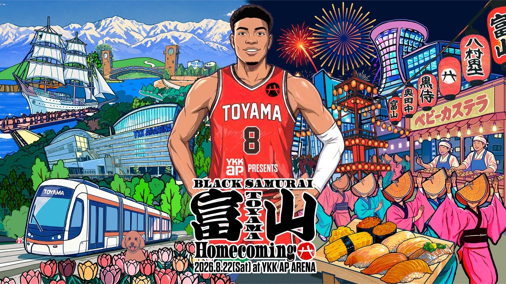

富山に、八村塁が帰ってくる —— NBA入り後初の公式凱旋イベント、8月22日にYKK AP ARENAで
故郷のアリーナに、あの背番号が立つ。富山県が7月24日に発表したこの夏の目玉が「YKK AP PRESENTS BLACK SAMURAI 富山 Homecoming」だ。2026年8月22日（土）、会場はYKK AP ARENA（富山市総合体育館）、時間は14時から21時（予定）。八村塁選手にとって、NBA入り後初となる公式の凱旋イベントになる。

昼はクリニック、夜は祭り
昼の部は「BASKETBALL CLINIC & ARENA EVENT」。小中学生向けのバスケットボールクリニックと、トークショーが行われる。地元の子どもたちが、世界のトップに立つ先輩から直接教わる一日だ。夜の部は「Night Festival Powered by アイザック」。盆DANCE、おわら風の盆のステージ、屋台の出店と、富山の夏がまるごとアリーナに持ち込まれる。会場を彩るのは、1,000個を超える「エール提灯」。なお、アリーナイベントの観覧チケットはすでに完売している。
同じ夏、黒部宇奈月キャニオンルートも動き出す
リリースにはもうひとつ、富山の新しい旅の話が載っている。黒部宇奈月キャニオンルートのツアーが7月23日に販売開始され、2026年10月2日から運行が始まる。初年度の運行は10月・11月のみで、募集枠は約2,700人。宇奈月発と黒部ダム発の1泊2日・基本4コースが、全国約1,180の旅行会社で販売される。「高熱隧道」や標高差200mの竪坑エレベーターといった、これまで一般には遠かった景色が旅の目的地になる。
富山の夏が、いちばん熱くなる日
世界で戦う男の凱旋と、県が動かす新しい旅。8月22日のYKK AP ARENAは、富山という土地の「いま」が一点に集まる場所になる。
出典: 富山県プレスリリース「動き出す、新しい富山旅！黒部宇奈月キャニオンルートツアー販売開始＆八村塁選手凱旋イベントなど盛り沢山の夏！」（PR TIMES・2026年7月24日）
https://prtimes.jp/main/html/rd/p/000000005.000185619.html